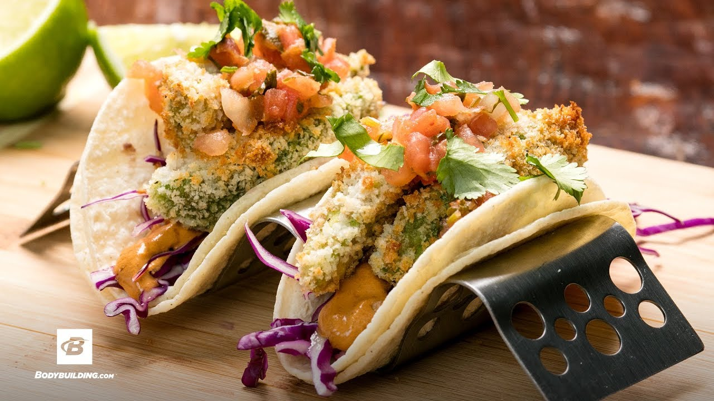

Tacos
Avocado Tacos

Description
Meet your recipe soulmate: Avocado Tacos. Could there be a taster tortilla filling? We think not.
These crispy avocado tacos are destined to be your new favorite!Quick and easy to make. Let’s get cooking!
Ingredients
- 3 avocados - peeled, pitted, and mashed
- ¼ cup onions, diced
- ¼ teaspoon garlic salt
- 12 (6 inch) corn tortillas
- 1 bunch fresh cilantro leaves, finely chopped
- jalapeno pepper sauce, to taste
Steps
- Preheat oven to 325 degrees F (165 degrees C).
- In a medium bowl, mix avocados, onions, and garlic salt.
- Arrange corn tortillas in a single layer on a large baking sheet, and place in the preheated oven 2 to 5 minutes, until heated through.
- Spread tortillas with the avocado mixture. Garnish with cilantro and sprinkle with jalapeno pepper sauce.